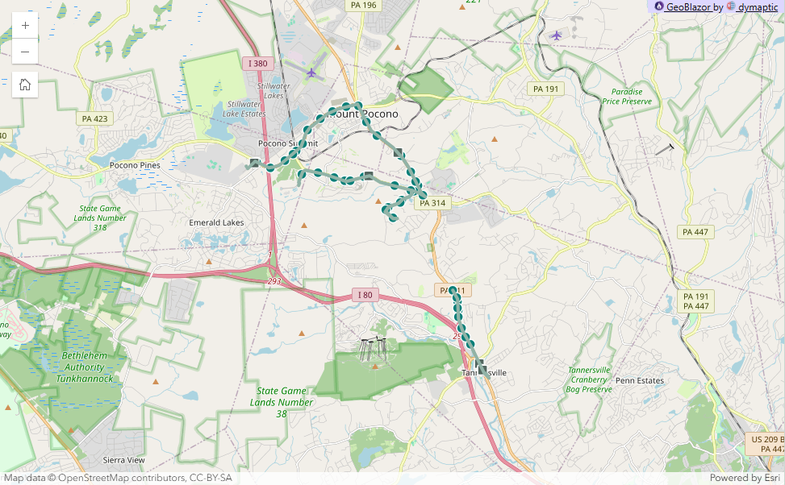
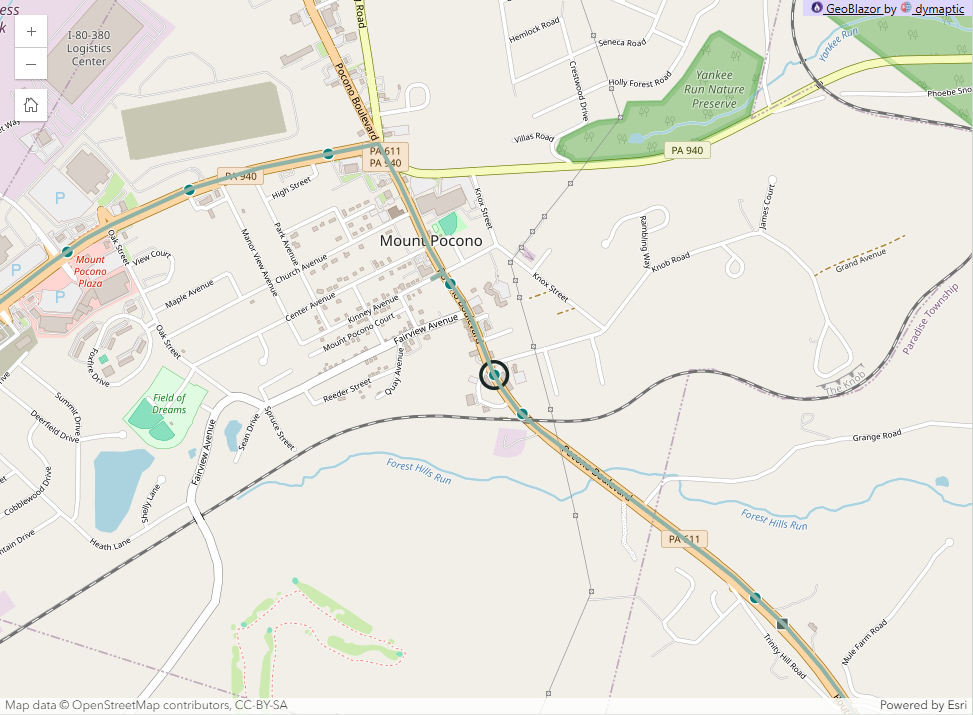
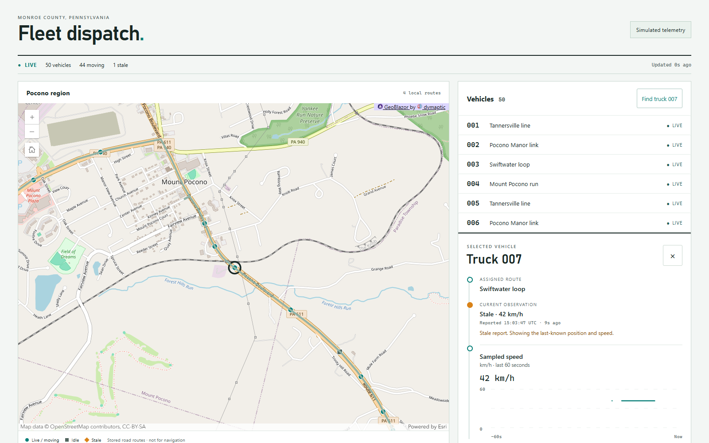
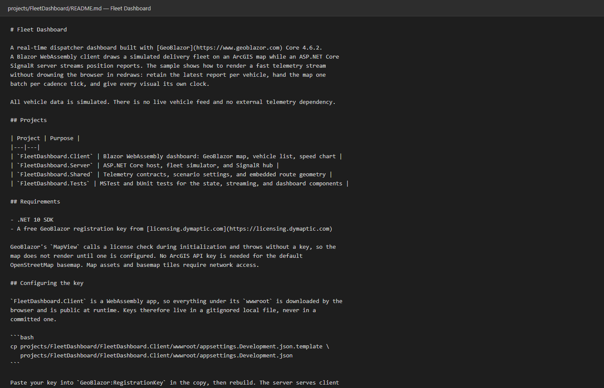

Thursday 11:30 a.m. · Sagewood
Real-Time Data
Visualization in Blazor
Tim Purdum · TechBash 2026
Your data has a heartbeat, and your dashboard can keep up with it.
GeoBlazor Core 4.6.2Blazor WebAssemblyASP.NET Core SignalR

Live · simulated telemetryWhich vehicles need attention?
TRUCK 007
- Position
- 41.0621, −75.3390
- Speed
- 42 km/h
- Last report
- 0.4 s ago
TRUCK 007
- Position
- last known 41.0588, −75.3407
- Speed
- 42 km/h (last report)
- Last report
- 12 s ago
Synthetic stress, not real truck behavior.
Interactive ArcGIS maps in Blazor, from C#
No hand-written JavaScript.
Core
Open source · this whole demo
Pro
Feature editing & sketching
The map already knows how to draw.
Getting live data onto it is the hard part.
Learn more
Websitegeoblazor.com
Documentationdocs.geoblazor.com
Samplesgithub.com/dymaptic/GeoBlazor-Samples
Core sourcegithub.com/dymaptic/GeoBlazor
Live demo
From truck to map
latest report per truck
every truck, one message, on a clock
Following report 4188 from Truck 7
keep latest a newer one replaces an older one
batch many go on together
each frame replaces the last
keep every report, or the latest per truck
one call per report, per truck, or for all
one page timer, 100 or 250 ms
Blazor Server or WebAssembly?
WebAssembly (this talk): C# runs in the browser
Blazor Server: C# runs on the server
over the circuit→✕serialize #1
Pick Server when
Internal app, reliable network, modest messages.
Pick WebAssembly when
It must stay usable through a disconnect.
The latest report, into one frame
// FleetDashboard.Shared · Telemetry.cs public sealed record VehicleReport( int VehicleId, long Sequence, DateTimeOffset ObservedAtUtc, double Longitude, double Latitude, double SpeedKph, string RouteId);
// One frame carries the whole roster public sealed record FleetFrame( Guid RunId, long FrameSequence, DateTimeOffset PublishedAtUtc, IReadOnlyList<VehicleReport> Vehicles);
Fields → one marker
Longitude, Latitude → point geometry
VehicleId → object ID and attributes
SpeedKph, ObservedAtUtc → details and staleness
Frame-level, not vehicle-level
RunId changes on a server restart and on a reset, so old sequence numbers stop counting.
Send the latest when you're ready
built when sent, nothing queued
to all clients
// FleetBroadcaster.cs · abbreviated using var timer = new PeriodicTimer(FrameInterval()); while (await timer.WaitForNextTickAsync(stoppingToken)) { // a slow send delays the next frame; missed intervals are not replayed await BroadcastAsync(_frameBuilder.CreateFrame(), stoppingToken); // re-read the frame rate each interval TimeSpan interval = FrameInterval(); if (timer.Period != interval) timer.Period = interval; }
Learn more: PeriodicTimer
The browser keeps the newest frame
is deserializedoffered: 10 a second at stress
At a 100 ms page tick the page reads about 9 of the 10 frames offered each second. When it reads slower than frames arrive, the newest frame wins.
Map, layer, feature

oid, vehicle, speedKph, route, statusFeatureLayerThe routes: a
GraphicsLayer// FleetMap.razor · abbreviated <MapView OnClick="SelectAtPoint"> <Map> <GraphicsLayer Title="Stored demonstration routes" /> <FeatureLayer Title="Fleet vehicles" ObjectIdField="oid" ... /> <GraphicsLayer Title="Selected vehicle" /> </Map> </MapView>
ObjectIdField names the attribute GeoBlazor pairs with a stable Graphic.Id to update the right feature.
An edit is one ApplyEdits call.
Learn more: docs.geoblazor.com
Fleet state: what waits for the map
One app, two ways to hold the same reports. The URL picks one, and everything else stays the same.
falls overKeep every report
one map edit per report, in arrival order
A demo guard, so the tab fails loudly instead of freezing.
holdsKeep the latest per truck
a newer report replaces the one waiting
Report 4188 replaces 4182. The map never drew 4182.
Coalesce current state. Never coalesce events.
A truck's older position is state, and safe to drop. A sale or an alarm is an event. Drop one and the information is gone.
The second batch Map edits: one call for every truck
Before · one awaited edit per feature
foreach (VehicleListItem update in updates) { await ApplyVehicleDelta([update], []); RemoveAppliedDelta([update], []); appliedCalls++; }
After · one awaited collection edit
// FleetMap.razor · DrainUpdates, EditGranularity branch await ApplyVehicleDelta(updates, removals); RemoveAppliedDelta(updates, removals); appliedCalls++;
500 map edits become 1 call, then 3 chunks
Edits sent per truck at ~6.7 ms each: ~3.4 seconds for 500 trucks.
All 500 in one call: ~75 ms.
Roads we tried
GraphicsLayerin a loopSetSource
Cadence
Every tick of the page timer
- Reads the newest frame and updates fleet state
- Hands the map the pending batch, and redraws the chart and counters
- The chart keeps 60 samples. The counters report over a 5-second window
Same edit, half the work. Map calls a second: 7.3 at 100 ms, 3.7 at 250 ms. Median edit: 75 ms, then 76 ms. Browser main thread busy in a 10 s trace: about 94% at 100 ms, about 48% at 250 ms.
Where does the time go?
One whole-fleet edit · same code, same machine
Bars: median time for one awaited edit call in the running app · stress preset
- Debug build2,500 ms
dotnet build, debugging on (debugLevel: -1) · 2,563 and 2,408 - Published build84 ms
dotnet publish, debugging off · 30 times faster per edit
Only debugging turned off · a separate run
- Debug, flag 079 to 84 ms
dotnet buildwith-p:WasmDebugLevel=0, nothing else changed · 2 runs
Publish before you measure.
ApplyEdits call in the running app. Building the client takes minutes, and none of that is measured here. One scale for all three bars, so the fast ones are about a thirtieth of the first. 84 ms is this side-by-side run. Slides 12 and 13 show the full comparison's median, 75 ms.AOT · published, interpreted vs AOT
dotnet.native.wasm
One 10 s whole-fleet trace each: main thread busy about 94% vs 61%, .NET about 49% vs 20%. AOT cut the .NET share by about 60%.
The floor · is it the map engine?
The remaining time is .NET on the browser's main thread, plus GeoBlazor's interop.
Per connection Experiment Testing it: send only what the map sees
InsideFull rate, every frame.
OutsideOnce a second, so the list stays complete.
Selected truckFull rate, wherever it goes.
Still safe
Every truck still arrives once a second.
Result: 191 of 500 trucks per frame. Edit time 27.5 ms, against 76.1 ms when the page reads every 250 ms. At the region view the whole fleet is in view, so little is saved (71.3 ms).
Better answer: StreamLayer, once GeoBlazor wraps it.
Compare the same workload
Time for one edit · median
Stress load: 500 trucks, 10 reports a second each
- Keep every report7.8 ms1 truck per call · safety stop in 3 of 3 runs
- Keep the latest per truck6.7 ms1 truck per call
- One call, all trucks75.1 msevery changed truck in one call · 2 runs
- Read every 250 ms76.1 msevery changed truck in one call
- In view, zoomed in27.5 ms191 of 500 trucks per frame
- In view, full fleet71.3 mswhole fleet in view, 500 per frame
| Setting | Changes | Edit p50, ms (range) | AOT p50, ms | Map calls/s | Live |
|---|---|---|---|---|---|
| Keep every report | Fleet state | 7.8 (7.0 to 8.1) | 7.0 | 53 | 100% |
| Keep the latest per truck | Fleet state | 6.7 (6.5 to 6.8) | 5.8 | 59 | 100% |
| One call, all trucks | Map edits | 75.1 (68.0 to 82.2) | 54.2 | 7.3 | 100% |
| Read every 250 ms | Cadence | 76.1 (65.4 to 78.7) | 57.4 | 3.7 | 100% |
| In view, zoomed in | Send | 27.5 (21.7 to 33.6) | 20.3 | 3.7 | 100% |
| In view, full fleet | Send | 71.3 (70.8 to 75.1) | 53.8 | 3.7 | 100% |
Streams someone else hosts
NOAA weather radarfree · refreshes every 5 minutes
NWS watches and warningsfree · refreshes every 3 minutes
TrafficEsri · needs an ArcGIS API key · every 5 minutes
| Someone else's stream | Your stream | |
|---|---|---|
| Code | a refresh interval | a store, frames, and the browser code after them |
| How often it changes | theirs | yours |
| Format | theirs | yours |
| Filtering | not at the source | at Send, per connection |
Learn more: ArcGIS Living Atlas
Connected does not mean current

Stale after 5 s
Measured from ObservedAtUtc, never from frame receipt. Checked again on every page tick.
Reconnect rules
Auto-reconnect for dropped transports · merge by sequence · RunId guards resets · no replay
What to take home
The server batches and thins the data before the browser sees it, so the browser's job is to keep that work. Under stress, the biggest gain came from sending less in each frame, not from sending fewer frames.
Publish before you measure. Try AOT.
Thank you to the TechBash 2026 sponsors
Questions
Thank you to TechBash
Write-up and links
timpurdum.dev/post/2026/10/15/techbash.html
Sample app: github.com/dymaptic/GeoBlazor-Samples · projects/FleetDashboard
Running the sample

Core registration
builder.Services.AddGeoBlazor(builder.Configuration);
Core registration and ArcGIS authentication are separate concerns.
Configuration keys
GeoBlazor:RegistrationKey
GeoBlazor:LicenseKey (fallback)
ArcGISApiKey (optional · turns on traffic)
No real key is committed. Presenter credentials never ship.
Checkpoints
One launch serves every setting through ?mode=, so recovery is a URL change.
What changes for Interactive Server?
- The SignalR hub is not needed: the circuit already is the connection.
- Both hosting models keep their own state and clean up after themselves. On Server, per-user state lives on the server and every update crosses the circuit.
- Circuit messages default to 32 KB, and GeoBlazor's own Server samples raise that limit.
- Do not add a same-process hub client just to imitate the WebAssembly architecture.
Measurement definitions
| Metric | Definition |
|---|---|
| Records / s | vehicle reports in newly observed frames. A repeated frame adds nothing |
| Pending records | records waiting for the map, from the raw queue or the dirty vehicles |
| Replaced state | pending reports replaced by a newer report for the same vehicle |
| Application map calls / s | calls to FeatureLayer.ApplyEdits, not JavaScript calls |
| Features submitted / s | feature edits passed to the adapter, by add, update or delete |
| Edit duration | monotonic elapsed time around the awaited call, including internal chunks |
| Selected observation age | now minus the last successfully applied observation time |
| Failure count | failed feature edits and failed batches |
| Reconnects | client reconnect events, a separate counter |
| Received frames / s, receipt-to-apply delay | defined in the demo plan, not measured |
Protocol
Published build (dotnet publish -c Release), same preset, 30 s warm-up, 60 s per setting, three rounds with the builds alternated, counters reset between runs. The in-view runs fix the map extent: one zoomed on the selected truck, one at the full region.
Environment
Runs 2026-10-13 and 2026-10-14
Machine TimP_Dymaptic, i7-14700, 64 GB
Build dotnet publish -c Release · Core 4.6.2
Runtime interpreted, AOT · chunk size 200
Sample 865312d · 500 vehicles · 10 frames/s
Browser Chromium 153, headed, hardware GPU
Window 30 s warm-up · 60 s run
Full record of the published runs behind slides 12 to 16: assets/measurement-environment.txt. Paint rate was not measured.
Beyond the sample
Durable event history
Keep an append-only record when replay and audit matter more than freshness.
Authorization
Decide who may see which vehicles before the frame leaves the server.
Routing
Routing chooses a path. This demo follows stored paths and claims nothing about legal truck access.
StreamLayer
Coming in a later GeoBlazor release, it moves the live feed into the map itself.
These four are where I would take the sample next.
Choosing the update path
The ArcGIS engine is not the cost
A JavaScript-only control moved the same 500 points: one collection call took 10.9 ms with the page's requestAnimationFrame rate at 119.5 a second, and a single-feature call 0.1 ms. That control had no .NET and no interop in it. A JavaScript GraphicsLayer matched it on throughput only. GeoBlazor's own was not measured.
Three paths GeoBlazor exposes
- One collection
FeatureLayer.ApplyEditscall: today's path, chunked at 200 graphics. FeatureLayer.SetSource, a bulk replacement: data stayed current but the rendered view desynced. After 40 calls, hit testing returned the vehicle's own feature for 2 of 40 and some feature for 27 of 40.- A
GraphicsLayer: one interop call per graphic, no bulk update, no renderer.
Measure before choosing
- Visible movement, current attributes and status
- Same object identity, working hit testing and selection
- Join and leave handling
Keep one edit in flight. Quote no timing before all of it.
No stream layer in 4.6.2
GeoBlazor 4.6.2 wraps no StreamLayer, the layer Esri designed for this. Keeping FeatureLayer also keeps the UniqueValueRenderer, the ObjectIdField, and queryFeatures.
Paint rate was never measured. Software and hardware WebGL runs of the whole-fleet edit (2026-09-17) recorded the same edit durations, and edit duration excludes painting.
Publishing and AOT
Measure a published build
dotnet build output runs the browser client with debugging on, and it ran about 30 times slower. Alternated in the same half hour, whole-fleet edit p50 was 2,563 and 2,408 ms from build output against 84 ms published. Build output with only WasmDebugLevel=0 changed ran at published speed: 83.6 and 78.8 ms against 88.5 and 108.2 ms published, in the same rounds.
The publish command
# one line, wrapped to fit
dotnet publish FleetDashboard.Server.csproj -c Release
-p:WasmApplicationEnvironmentName=Development
Since .NET 10 the client's environment is fixed at build time. Without the property, the published client is Production and skips appsettings.Development.json.
Add AOT
Add -p:RunAOTCompilation=true. It needs the wasm-tools workload.
| Interpreted | AOT | |
|---|---|---|
| One call, all trucks | 75 ms | 54 ms |
| Read every 250 ms | 76 ms | 57 ms |
| dotnet.native.wasm | 2.9 MB | 51 MB |
When AOT pays off
- It pays when CPU-heavy .NET runs on the browser's main thread. Here it cut whole-fleet edit p50 by about 25 to 28% and the .NET share of main-thread time by about 60% (one trace per mode).
- It costs download size and a longer publish. Per-vehicle calls, about 6 ms, gained about 1 ms.
Edit p50 is the median of the alternating runs (three, or two for the interpreted one-call runs), 2026-10-13 and 2026-10-14, one machine. These are observations, not a benchmark.